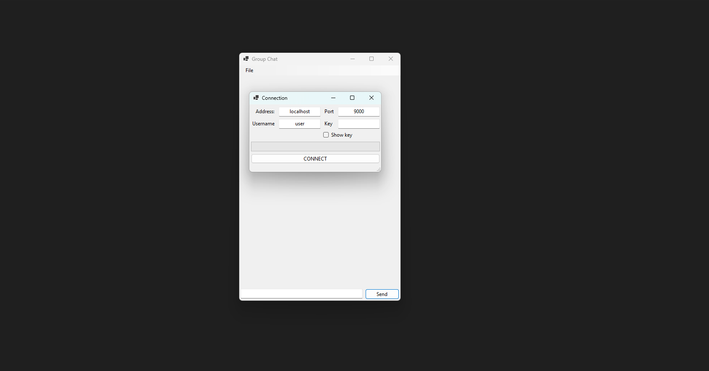
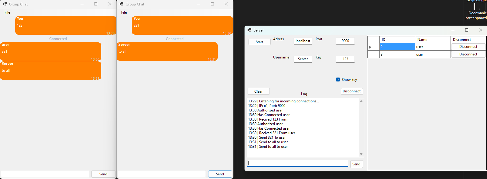

Group Chat
This C# Windows Forms project is a TCP/IP-based group chat application with two parts: a client app for user chat and a server app for administration. Clients connect to the server to send and receive messages in real-time. The server tracks connected users, enables browsing, allows admins to kick users , and send broadcast messages. Additionally, it logs all events and messages.
1 / 3

Clients connects to the server
2 / 3

Progress bar representing stages of creating tcp connection
3 / 3

Clients can communicate with each other, and the server can broadcast messages to all clients. The server also logs events and provides the option to disconnect specific clients.